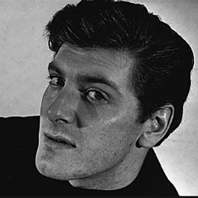

| Home | The Doctors | The Companions | The Villians |
|
|||
|
Steven TaylorSteven first appears in the serial The Chase, when the Doctor and his companions, Ian, Barbara, and Vicki, find him on the planet Mechanus where he crash-landed two years before. He joins the Doctor and Vicki as a companion in the following serial, The Time Meddler, when they discover that he stowed-away in the TARDIS after having escaped the burning Mechanoid City. Steven is a strong-willed individual, who is more capable when there is something physical to do than when there is thinking to be done. He has a finely developed sense of right and wrong, and places a high value on human life. Steven follows the Doctor through The Daleks' Master Plan, a dark and dangerous adventure that takes the lives of Sara Kingdom and Katarina. He argues with the Doctor when he refuses to prevent the events of The Massacre of St Bartholomew's Eve. Steven is ready to part company with the Doctor over the deaths that happened, in particular that of a woman named Anne Chaplet. He rejoins the Doctor, however, at the same time that they acquired a new travelling companion, a young woman by the name of Dorothea "Dodo" Chaplet, who is apparently a descendant of Anne's. Steven's journey eventually ends during the The Savages, when he decides to accept the responsibility of leading the combined society of Savages and Elders that is attempting a lasting peace. His life beyond that is not explored in the series. The exact time period that Steven originally came from is not specified in the television series. However, in The Daleks' Master Plan, set in the year 4000, Steven states that he comes from "thousands of years" before that period.
|